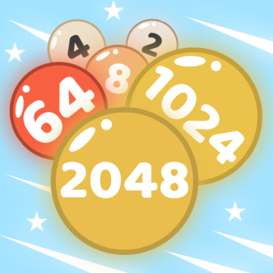

2048: دليل الإتقان الرياضي
مقدمة في الجبر والمنطق: ما وراء الأرقام
لعبة 2048 التي صممها جابرييل سيرولي عام 2014، هي مثال مبهر لكيفية تحويل مفهوم رياضي بسيط (قوى العدد 2) إلى لغز مُسبب للإدمان. لا يقتصر نجاح اللعبة على الحظ، بل يعتمد بالكامل على **التفكير الرياضي المنهجي** وتطبيق استراتيجية حاسمة تهدف إلى التحكم في عشوائية ظهور البلاطات الجديدة. هدف هذا الدليل هو تحويلك من لاعب عادي إلى محترف يتقن فن التلاعب باللوحة 4x4.
⧈ الفصل الأول: الاستراتيجية الذهبية (The Corner Rule)
النجاح في 2048 يتلخص في تطبيق استراتيجية واحدة رئيسية تعرف بـ **"قاعدة الزاوية المحفوظة"** أو **"قاعدة الأفعى (Snake Pattern)"**. هذه القاعدة هي أساس أي محاولة للوصول إلى 2048 أو حتى البلاطات الأكبر مثل 4096 و 8192.
مبدأ قاعدة الزاوية المحفوظة:
- **تثبيت القيمة الأكبر:** يجب أن تضع البلاطة ذات القيمة الأكبر في زاوية واحدة من اللوحة (عادةً الزاوية السفلية اليمنى أو اليسرى) وتتعهد **بعدم تحريكها أبداً** من تلك الزاوية.
- **تجنب الانزلاق:** إذا اخترت الزاوية السفلية اليمنى، فإن الحركة الوحيدة الممنوعة هي **الضرب للأعلى**. يجب أن تقتصر حركاتك على **اليمين، والأسفل، واليسار**.
- **بناء السلسلة الهرمية:** قم ببناء سلسلة متناقصة من البلاطات مرتبة بشكل متجاور (مثلاً: 1024، 512، 256، 128) إما في الصف السفلي أو في العمود المجاور للزاوية. هذا يضمن أن يكون دمج الأرقام الصغرى ممكناً دون تحريك البلاطة الأكبر.
**القيمة المضافة:** تمنحك هذه الاستراتيجية سيطرة قصوى على مكان ظهور البلاطات الجديدة، حيث أن البلاطات الجديدة (2 أو 4) ستظهر في الأماكن الفارغة التي تُنشئها في الجزء العلوي من اللوحة، بعيداً عن منطقتك الحرجة.
📈 الفصل الثاني: الرياضيات وراء اللوحة (قوى العدد 2)
لعبة 2048 هي في جوهرها استعراض لمفهوم النمو الأسي. كل بلاطة تمثل قوة للرقم 2 ($2^n$). لفهم اللعبة بعمق، يجب أن تفهم العلاقة بين القيمة والنقاط.
تحليل نمو البلاطات:
| قيمة البلاطة | كقوة للعدد 2 ($2^n$) | عدد مرات الدمج المطلوبة (من 2) |
|---|---|---|
| 32 | $2^5$ | 5 دمج |
| 128 | $2^7$ | 7 دمج |
| 512 | $2^9$ | 9 دمج |
| 2048 | $2^{11}$ | 11 دمج متتالٍ |
هذا التحليل الرياضي يؤكد أن كل بلاطة تدمجها يجب أن تكون جزءاً من سلسلة تؤدي في النهاية إلى الـ 2048. إن فشل دمج بلاطة ذات قيمة صغيرة يعني أنك تحتاج لـ **دمج إضافي** في المستقبل، مما يستهلك مساحة ثمينة على اللوحة.
🧠 الفصل الثالث: إدارة الفوضى والتحكم في العشوائية
التحدي الأكبر في اللعبة هو ظهور البلاطات العشوائية ذات القيمة 2 أو 4. اللاعب المحترف لا يحاول قمع العشوائية، بل يحاول **توجيهها** إلى مناطق يمكن السيطرة عليها.
نصائح للمناورة المتقدمة:
- **تنظيف الحافة:** عندما تمتلئ اللوحة، استخدم الضربات الجانبية (يمين/يسار) المتكررة لإنشاء فراغات جديدة على الحواف، وتجنب ترك البلاطات الصغيرة في المنتصف.
- **التخطيط للأمام (Look Ahead):** قبل كل حركة، اسأل نفسك: "ما هي الأسوأ الأماكن التي يمكن أن تظهر فيها البلاطة الجديدة، وهل ستفشل استراتيجية الزاوية إذا حدث ذلك؟"
- **استخدام البلاطة 4 بذكاء:** ظهور بلاطة 4 بدلاً من 2 هو مكافأة. استخدمها فوراً لدمجها مع بلاطة 4 أخرى أو بلاطة 2 موجودة لتقليل الفوضى وزيادة التقدم.
✅ الخلاصة والقيمة الحقيقية للمحتوى
لعبة 2048، على بساطتها الظاهرة، هي أداة تدريب قوية للعقل. القيمة الحقيقية التي نقدمها لك في هذا الدليل هي الخبرة المنهجية في تطبيق استراتيجية 'الزاوية' وفهم عميق للنمو الأسي وراء كل حركة. باستخدام هذا التحليل، لن تلعب بالحظ، بل بالمنطق والرياضيات.